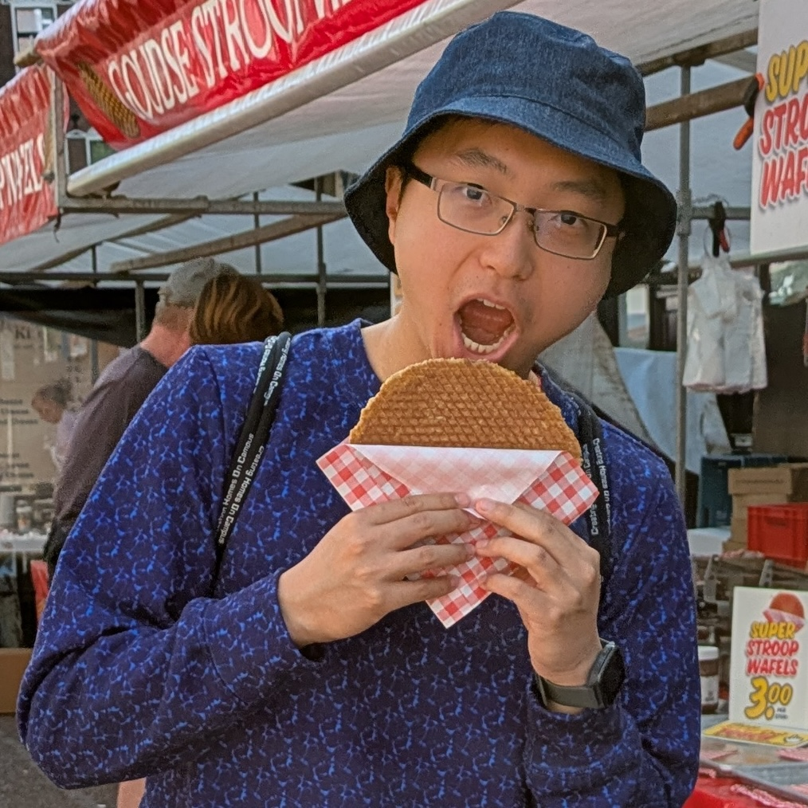

Kevin Feng
Scientist @ Microsoft
📍 Bay Area, CA
I'm a researcher interested in how we can diffuse AI fruitfully and safely throughout society. My work spans human-AI interaction, agentic systems, evaluation, and alignment. I'm currently a Senior Applied Scientist at Microsoft, where I work on evaluation science and AI deployment in enterprises.
I received my PhD in Human Centered Design & Engineering at the University of Washington, where I was fortunate to be advised by David W. McDonald and Amy X. Zhang. During my PhD, I interned at Google Research, Ai2, and Microsoft Research, and collaborated with UK AISI and GovAI. My research has been recognized with a UW Herbold Fellowship (2022), an OpenAI Democratic Inputs to AI grant (2023), a CHI Best Paper Award (2026), and orals at NeurIPS and ICLR workshops. Before UW, I received my BSE in Computer Science and a minor in Visual Arts from Princeton University, where I was fortunate to be advised by Arvind Narayanan.
Misc
Here's some photography and Chinese brush painting I've done in the past.